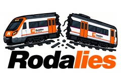

Rodalies
Vila-seca ⇄ Barcelona-Passeig de Gràcia · R14 · R15 · R16
Mapa del tren
Carregant…
↻
Actualitza
Força l'actualització a GitHub ↗
Prop de casa
⇄
A Barcelona
Trens en moviment
--:--:--
Des de Vila-seca
Des de Pg. de Gràcia
Vila-seca
→
Pg. de Gràcia
Sortides de Vila-seca
Pg. de Gràcia
→
Vila-seca
Sortides de Pg. de Gràcia
Com van els trens
Tota la xarxa de Rodalies
Avisos del servei
Última hora a X
R14
@rod14cat
R15
@rod15cat
R16
@rod16cat
R
@rodalies